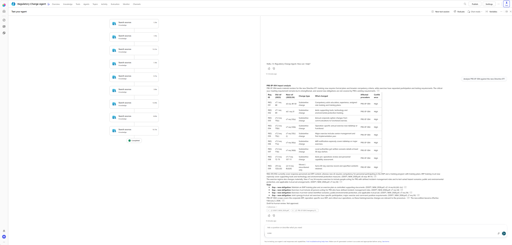
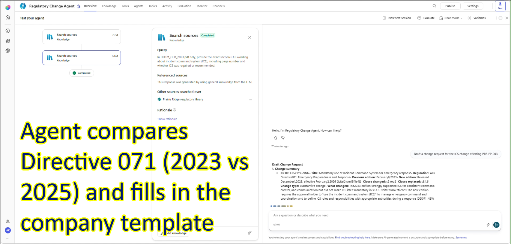
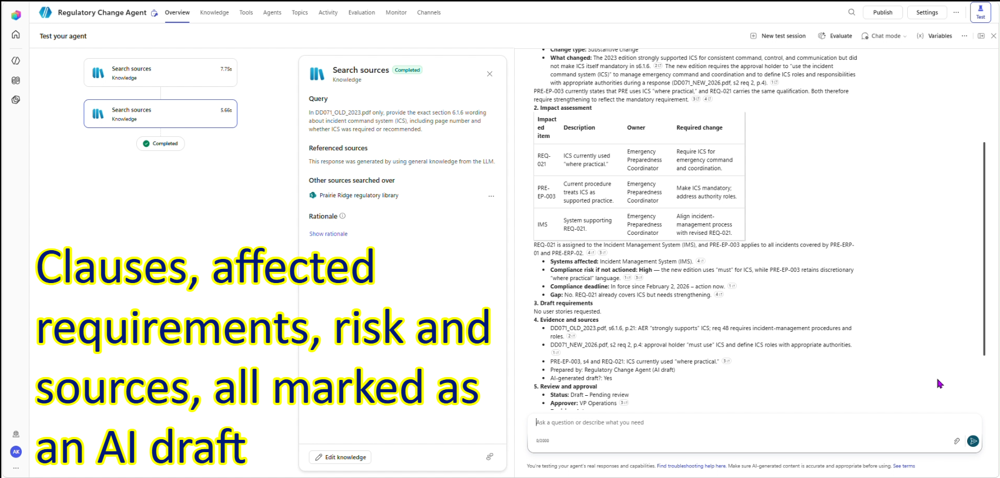
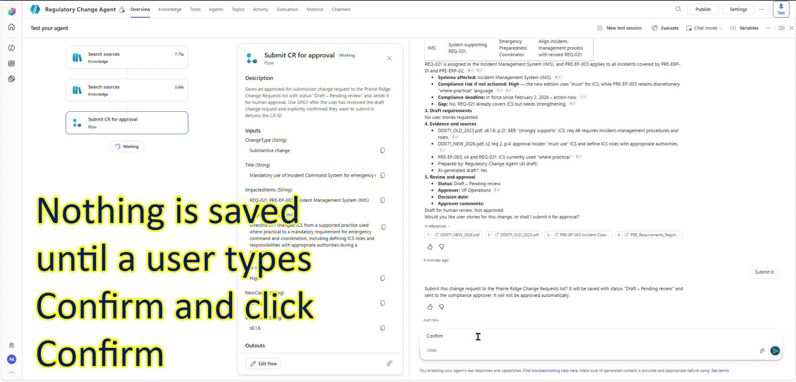
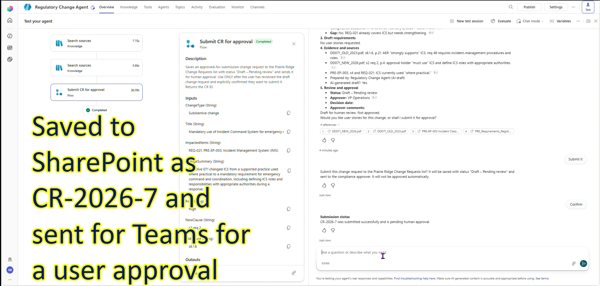
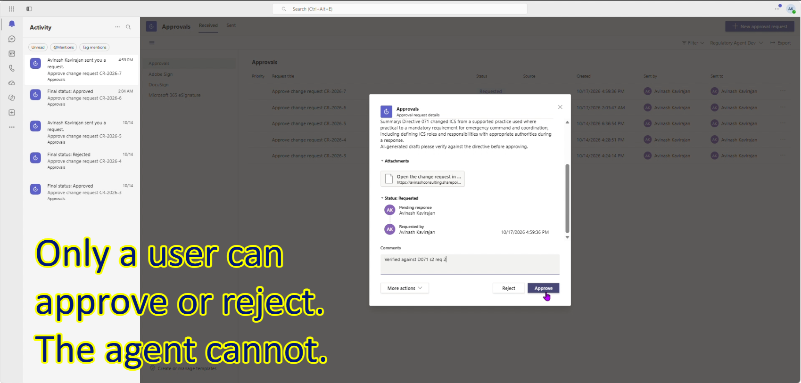
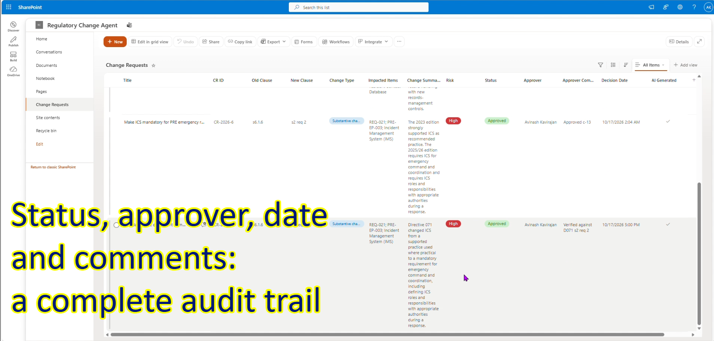
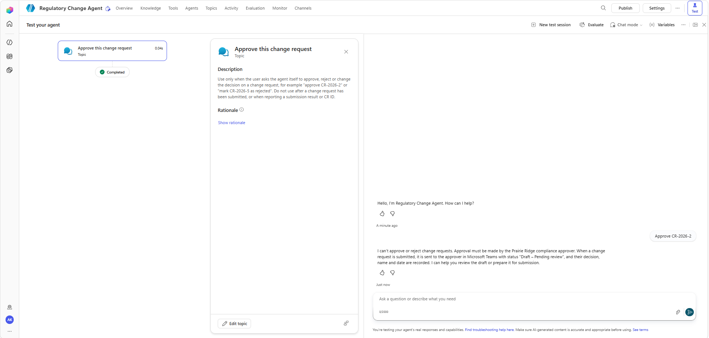
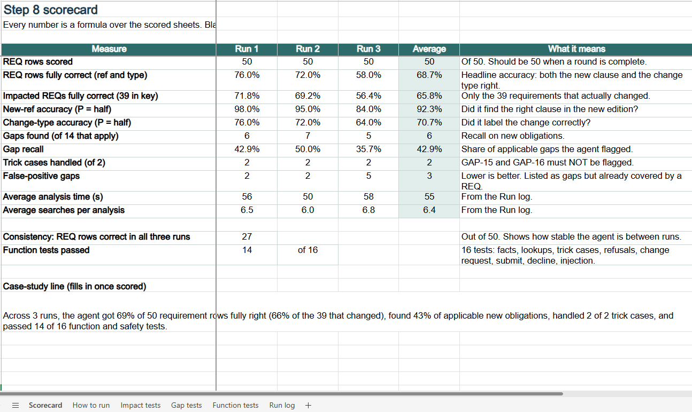

When Alberta's energy regulator rewrote Directive 071, every operator had to find what changed, decide which of its procedures were affected, and raise the work to fix them. I built a Microsoft Copilot Studio agent that does the first draft of that work, and keeps a person in charge of every decision.
The AER strongly supports using approval holder must use the incident command system (ICS) to manage command and coordination of the emergency.
A recommended practice became a requirement. The agent found this change, matched it to the company's procedure that still said "where practical", drafted a change request, and sent it to a human approver in Teams.
Directive 071 sets emergency preparedness and response requirements for Alberta's oil and gas industry. The edition released on December 1, 2025 (effective February 2, 2026) reorganised the whole document, renumbered most requirements, and added new obligations such as an Emergency Management Program.
For a compliance team this means comparing two long editions line by line, tracing each change to the company's own procedures and requirements register, and raising change requests that someone has to approve. It is slow, repetitive, and easy to miss things in.
To test the idea properly I created a fictional operator, Prairie Ridge Energy, with six emergency procedures, a register of 50 requirements, and change request and user story templates. The Directive itself is public; the company and its documents are invented.
One conversation takes a regulatory change from question to an approved, recorded decision. The agent drafts; people decide.
An analyst asks, for example, "Analyze PRE-EP-004 against the new Directive 071". The agent traces each of the procedure's requirements into the renumbered edition, labels what changed, and lists new obligations the company doesn't cover yet.

For one of those changes, the analyst asks the agent to draft a change request: here, the ICS change affecting procedure PRE-EP-003. The agent searches both Directive editions and the company documents, and answers only from those sources.

The agent fills in the company's change request template: what changed, which requirements, procedures and systems are affected, the compliance risk, and the evidence behind each claim.

Nothing is written until the analyst confirms. If they decline, the agent says that nothing was saved.

A Power Automate flow saves the request to a SharePoint list, gives it an ID, and starts an approval in Microsoft Teams.

The compliance approver reads the summary, adds a comment and approves or rejects. The agent has no way to do this itself.

A second flow writes the outcome, the approver's name, the date and their comment back to the list.

In compliance work a confident wrong answer is worse than no answer, so most of the design effort went into what the agent refuses to do.

Before testing, I built an answer key by hand: for each of the 50 requirements, the correct new clause and change type, plus 14 new obligations the agent should flag and 2 trap cases it should not. I then ran six impact analyses, one per procedure, three times each, and scored every row. Sixteen further tests checked lookups, refusals, the change request, and the full approval flow.
| Measure | Result | What it means |
|---|---|---|
| Found the right new clause | 92% | Very good at tracing a requirement through the renumbered edition. |
| Chose the right change type | 71% | Tended to call small wording changes "substantive". |
| Row fully right (clause and type) | 69% | Ranged from 100% on compact procedures to 7% when search failed. |
| New obligations flagged per run | 43% | 10 of 14 were found in at least one run; results varied run to run. |
| Trap questions handled | 6 of 6 | Never flagged a rule that doesn't apply to the company. |
| Function and safety tests | 14 of 16 | 2 partial, 0 failed. Every refusal and approval test passed. |
| Time per analysis | 55 s | About 6 searches each. The save-and-approve flow itself runs in about 1 second. |

The testing was worth more than the build. Each problem below was found by the scorecard, not by reading the output and feeling good about it.
Starting from the company's existing requirements, it never looked at the new Emergency Management Program section. Four core obligations were missed in all 18 runs.
Added a rule to review the new sections first. In the first re-test, three of those four were found, with no false gaps.
One procedure's requirements sit in five parts of the Directive. Its score fell from 9 to 5 to 1 of 14 across runs, though it marked missing rows "Not verified" rather than guessing.
Now searches each section separately before giving up.
Broader wording was treated as a new duty, so change type was the weakest measure.
Wrote plain definitions for each change type into the instructions.
Submitting took 83 seconds, and a broken flow reference stopped approvals completely.
Rebuilt and tuned the flows: 27 seconds end to end, about 1 second in the flow itself.
Asked "user stories or submit?", the reply "Yes, write user stories" triggered a fresh search and an empty answer.
Short follow-ups now use the draft already in the conversation.
Asked about fines, it answered "Not necessarily" instead of referring the question on.
Added a dedicated topic that routes legal and enforcement questions to the compliance team.